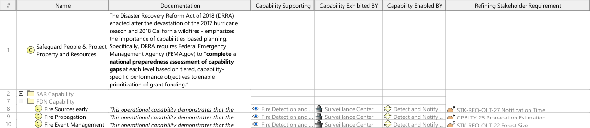

O8_OCYM Operational Capability Mapping Viewpoint
| Domain | Aspect | Maturity |
|---|---|---|
| Operational | Traceability & Mapping |

The Operational Capability Mapping Viewpoint describes the relationships of Operational Capabilities. The reasoning for Operational Capabilities as support for Operational Stories and the contribution of Operational Processes to Capabilities are described. Operational Capabilities encoded in Stakeholder Requirements are identified.
The Operational Capability Mapping Viewpoint supports the “Business or Mission Analysis Process” activities of the INCOSE SYSTEMS ENGINEERING HANDBOOK 2023 [§ 4.1] and contributes to the definition of Operational Capabilities.
A tabular format listing the relationships of Operational Capabilities to Stakeholder Requirements, Operational Stories, and Operational Process Activities.
The following Stereotypes / Model Elements are used in the Viewpoint: